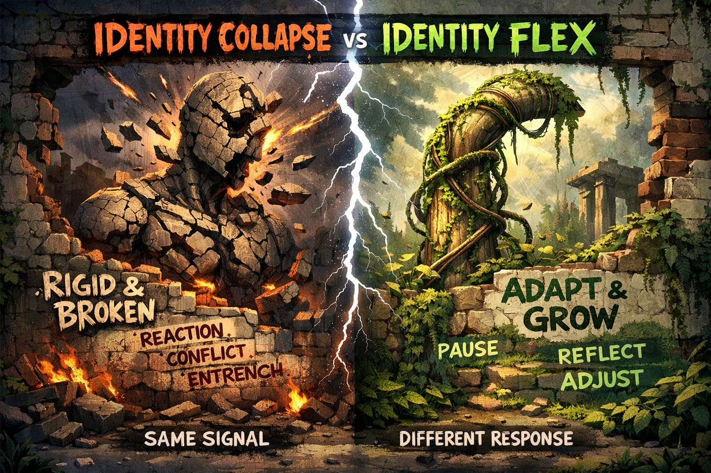

COLLAPSE vs FLEX MODEL
“Same trigger. Two completely different outcomes.”
Something hits the system:
📡 criticism
📡 contradiction
📡 exclusion
📡 humiliation
📡 loss of status
📡 uncertainty
👉 Identity is activated
Rigid structure meets pressure
🧠 “This challenges who I am.”
Signal is interpreted as:
👉 danger to self
(not just disagreement)
Identity fuses with:
👉 “This IS me”
No separation between: idea ≠ self
System mobilizes:
👉 emotional velocity spikes
Behavior escalates:
System reinforces itself:
👉 “I must be right to remain intact”
Two outcomes:
A. 💥 breakdown (identity fracture, shame spiral)
B. 🧱 entrenchment (extreme rigidity, tribal lock-in)
signal → identity fusion → threat → defense → conflict → rigidity
👉 low flexibility
👉 high reactivity
👉 high manipulation risk
Adaptive structure meets pressure
🧠 “Something is being activated.”
Pause before interpretation.
Key move:
👉 self ≠ idea
👉 self ≠ role
👉 self ≠ reaction
System slows:
👉 emotional speed drops
Instead of one identity:
👉 internal flexibility increases
System processes:
👉 no fracture required
Identity evolves:
👉 continuity maintained
signal → pause → separation → observation → integration → adaptation
👉 high flexibility
👉 low reactivity
👉 low manipulation risk
self = belief
instant reaction
threat interpretation
rigid identity
conflict escalation
stability through force
self contains belief
delayed response
signal observation
layered identity
integration
stability through adaptation
Both paths start at the same place:
👉 activation
The difference is not intelligence.
The difference is:
👉 identity flexibility under pressure
Outrage systems exploit collapse:
👉 collapse becomes profitable
To shift collapse → flex:
The Hellhound does not stop conflict.
It detects:
📡 where fusion occurred
📡 where velocity spiked
📡 where identity locked
It watches for:
👉 the exact moment flexibility was lost
Identity collapse tries to survive by becoming rigid.
Identity flex survives by remaining adjustable.
“same signal”
“different structure”